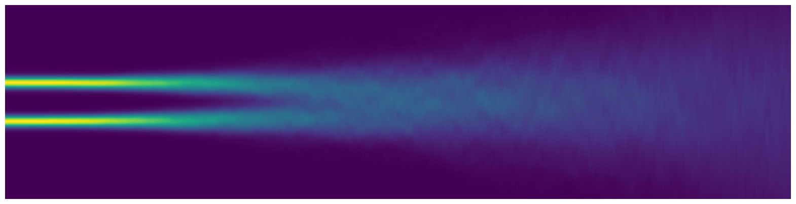

Introduction
\[ \rmd \bfX_t = \underbrace{\vphantom{\sqrt{\tfrac{\rmd \sigma_t^2}{\rmd t}}}\tfrac{\rmd \log \alpha_t}{\rmd t}}_{f(t)} \bfX_t \; \rmd t + \underbrace{\sqrt{\tfrac{\rmd \sigma_t^2}{\rmd t} - 2\sigma_t \tfrac{\rmd \log \alpha_t}{\rmd t}}}_{g(t)}\; \rmd \bfW_t \tag{1} \]
As I was writing up my Ph.D. thesis I was looking to explain how we chose the popular form of (1) for diffusion models. It is well known that this formulation yields the following transition kernel
\[ q(t, \bfx_t | 0, \bfx_0) = \mathcal N(\bfx_t; \alpha_t\bfx_0, \sigma_t^2 \boldsymbol I), \tag{2} \]where $\bfx_0 \in \R^d$ is the initial clean data sample and, with abuse of notation, $\mathcal N(\,\cdot\,; \boldsymbol \mu, \boldsymbol \Sigma)$ denotes the density function of a multivariate Gaussian with mean vector $\boldsymbol \mu \in \R^d$ and covariance matrix $\boldsymbol \Sigma \in \R^{d\times d}$. For notational shorthand we will write $q_{t|s}(\bfx\mid\bfy) \mapsto q(t, \bfx \mid s, \bfy)$.
This is a very convenient property for diffusion models as it implies sampling in forward time reduces to the nice form
\[ \bfx_t = \alpha_t \bfx_0 + \sigma_t \boldsymbol \epsilon, \qquad \boldsymbol \epsilon \sim \mathcal{N}(\boldsymbol 0, \boldsymbol I), \]which enables the flexible use of simulation-free training techniques. However, as I looked at prior works which popularized these choices of noise schedules I noticed that the choice of drift and diffusion coefficients for the stochastic differential equation (SDE) in (1) were simply stated as correct (which they are), but the derivations were elided.
Goal. In this post I walk through a derivation of these coefficients, starting from the ideal transition kernel, and then deriving the corresponding SDE which produces this transition kernel. My hope is that this is helpful to other researchers diving into the maths behind diffusion models.
Preliminaries
Before diving straight into the derivation, we will cover some useful maths on the transition kernel. Consider a general $d$-dimensional Itô SDEFor the reader unfamiliar with SDEs one can think of the first term, $\bsf(t, \bfX_t)\; \rmd t$, as a standard ordinary differential equation (ODE). The diffusion coefficient $\bsg: [0,T] \times \R^d \to \R^{d\times d'}$ and the infinitesimal $\rmd \bfW_t$ can be thought of as another differential equation that is controlled by the noisy signal $\bfW_t$. There is a fair bit of technical detail required for Itô integration to be well-defined which we elide here — for further reading we recommend Peter Holderrieth's excellent blog post. driven by the standard $d'$-dimensional Brownian motion $\{\bfW_t : 0 \leq t \leq T\}$,
\[ \rmd \bfX_t = \bsf(t, \bfX_t)\; \rmd t + \bsg(t, \bfX_t)\; \rmd \bfW_t. \tag{3} \]To understand the transition kernel $q_{t|0}(\bfx_t \mid \bfx_0)$ of this SDE it would be helpful to understand the dynamics of $\ex[\bfX_t]$ and $\var[\bfX_t]$. Or, in other words, we would like to find functions $\boldsymbol \mu: [0,T] \times \R^d \to \R^d$ and $\boldsymbol \Sigma: [0,T] \times \R^d \to \R^{d\times d}$ such that
\[ \begin{aligned} \rmd \ex[\bfX_t] &= \boldsymbol\mu(t, \bfX_t) \; \rmd t,\\ \rmd \var[\bfX_t] &= \boldsymbol\Sigma(t, \bfX_t) \; \rmd t. \end{aligned} \]Written in this form it seems natural to apply the chain rule from calculus since we have an expression for $\bfX_t$ in (3). Unlike in traditional calculus, the chain rule for Itô calculus is given by the famous Itô's lemma (or Itô's formula), and has a second-order correction term which can be thought of as accounting for the complexities of integration against rough stochastic signals.
Thus for some sufficiently smooth $\phi$ we can take the expectation of both sides and formally divide both sides by $\rmd t$ to find
\[ \begin{aligned} \frac{\rmd \ex[\phi(t, \bfX_t)]}{\rmd t} &= \ex\!\left[\frac{\partial \phi}{\partial t}\right] + \ex\!\left[\innerprod{\nabla_\bfx \phi(t, \bfX_t)}{\bsf(t, \bfX_t)}\right]\\ &\quad + \tfrac 12\ex\!\left[\innerprod{\nabla_\bfx^2\phi(t,\bfX_t)}{\bsg(t, \bfX_t)\bsg(t, \bfX_t)^\top}_F\right]. \end{aligned} \]Now let $\phi$ denote the identity function $(t, \bfX_t) \mapsto \bfX_t$. Then we arrive at the elegant ODE
\[ \frac{\rmd \ex[\bfX_t]}{\rmd t} = \ex[\bsf(t, \bfX_t)]. \tag{4} \]Recall that the covariance matrix is defined as
\[ \var[\bfX_t] = \ex\!\left[(\bfX_t - \ex[\bfX_t])(\bfX_t - \ex[\bfX_t])^\top\right]. \]Thus, with a little algebra we find
\begin{equation} \tag{5} \begin{split} \frac{\rmd \var [\bfX_t]}{\rmd t} &= \ex[\bsf(t, \bfX_t)(\bfX_t - \ex[\bfX_t])^\top]\\ &+ \ex[(\bfX_t - \ex[\bfX_t])\bsf(t, \bfX_t)^\top]\\ &+ \ex[\bsg(t, \bfX_t)\bsg(t, \bfX_t)^\top]. \end{split} \end{equation}For more details on deriving these equations for the mean and covariance of Itô processesThese equations cannot be used in general as the expectations should be taken w.r.t. the actual distribution of the state, which is described via the Fokker–Planck–Kolmogorov equation. we refer the reader to Section 5.5 of Särkkä and Solin's excellent book.
Deriving the drift and diffusion coefficients
In the context of diffusion models we often operate within the much simpler framework of affine coefficients, i.e.,
\[ \rmd \bfX_t = f(t)\bfX_t\; \rmd t + g(t)\; \rmd \bfW_t. \tag{6} \]Given this SDE we will derive the drift and diffusion coefficients that yield the desired transition kernel in (2); we will spend the rest of this post proving the following proposition.
Finding the drift coefficient
We start by deriving the drift coefficient. Let $\boldsymbol \mu(t) = \ex[\bfX_t]$, then by (4) we have the ODE
\[ \frac{\rmd \boldsymbol\mu}{\rmd t}(t) = f(t)\boldsymbol \mu(t), \]with initial condition $\boldsymbol \mu(0) = \bfx_0$. We can solve this ODE by using the integrating factor $\exp \int_0^t f(\tau)\;\rmd \tau$ to find the solution for the mean vector,
\[ \boldsymbol \mu(t) = \bfx_0 e^{\int_0^t f(\tau)\;\rmd \tau}. \]From our definition of the transition kernel we know that $\boldsymbol \mu(t) = \alpha_t \bfx_0$, and thus we can derive $f(t)$ in terms of the schedule $\alpha_t$:
\[ \begin{aligned} \alpha_t \bfx_0 &= \bfx_0 e^{\int_0^t f(\tau)\;\rmd \tau},\\ \alpha_t &= e^{\int_0^t f(\tau)\;\rmd \tau},\\ \log \alpha_t &= \int_0^t f(\tau)\;\rmd \tau,\\ \frac{\rmd \log \alpha_t}{\rmd t} &= f(t). \end{aligned} \]Finding the diffusion coefficient
Next we turn towards finding an expression for $g(t)$. For convenience let $\boldsymbol \Sigma(t) = \var[\bfX_t]$. Performing the following simplification,
\[ \begin{aligned} \ex[f(t)\bfX_t(\bfX_t - \boldsymbol \mu(t))^\top] &= f(t)\ex[\bfX_t(\bfX_t - \boldsymbol \mu(t))^\top]\\ &= f(t)\boldsymbol \Sigma(t), \end{aligned} \]and the same for $\ex[(\bfX_t - \boldsymbol \mu(t))f(t)\bfX_t^\top]$ mutatis mutandis; likewise,
\[ \ex[g(t)\boldsymbol I g(t) \boldsymbol I] = g^2(t) \boldsymbol I. \]Then, from (5) the dynamics of the covariance matrix is described by
\[ \frac{\rmd \boldsymbol \Sigma}{\rmd t}(t) = 2f(t)\boldsymbol \Sigma(t) + g^2(t) \boldsymbol I. \]From the boundary conditions we have $\boldsymbol \Sigma(0) = \boldsymbol 0$. Using the method of integrating factors again we find a closed-form expression for $\boldsymbol \Sigma(t)$:
\[ \boldsymbol \Sigma(t) = e^{2\int_0^t f(\tau)\;\rmd \tau} \int_0^t e^{-2\int_0^\tau f(u)\;\rmd u} g^2(\tau)\boldsymbol I\; \rmd \tau. \]Next, by definition of the desired transition kernel we assert that $\boldsymbol \Sigma(t) = \sigma_t^2 \boldsymbol I$. Substituting this into the previous equation yields
\[ \begin{aligned} \sigma_t^2 \boldsymbol I &= \frac{\alpha_t^2}{\alpha_0^2} \int_0^t \frac{\alpha_0^2}{\alpha_\tau^2}g^2(\tau)\boldsymbol I\; \rmd \tau,\\ \frac{\sigma_t^2}{\alpha_t^2} \boldsymbol I &= \int_0^t \frac{g^2(\tau)}{\alpha_\tau^2}\boldsymbol I\; \rmd \tau. \end{aligned} \]Then with a little algebra and using Newton's notationI.e., $\dot\alpha_t = \tfrac{\rmd}{\rmd t}\alpha_t$. we find:
\[ \begin{aligned} \int_0^t \frac{g^2(\tau)}{\alpha_\tau^2}\; \rmd \tau &= \frac{\sigma_t^2}{\alpha_t^2},\\ \frac{g^2(t)}{\alpha_t^2} &= \frac{\rmd}{\rmd t}\!\left(\frac{\sigma_t^2}{\alpha_t^2}\right),\\ &\stackrel{(i)}= \frac{2\sigma_t\dot\sigma_t\alpha_t^2 - 2\sigma_t^2\alpha_t\dot\alpha_t}{\alpha_t^4},\\ g^2(t) &= \frac{2\sigma_t\dot\sigma_t\alpha_t^2 - 2\sigma_t^2\alpha_t\dot\alpha_t}{\alpha_t^2},\\ &= 2\sigma_t\dot\sigma_t - 2\sigma_t^2 \frac{\dot\alpha_t}{\alpha_t},\\ &\stackrel{(ii)}= \frac{\rmd \sigma_t^2}{\rmd t} - 2\sigma_t^2 \frac{\rmd \log \alpha_t}{\rmd t}, \end{aligned} \]where $(i)$ holds by the quotient rule and $(ii)$ holds by applications of the chain rule.
General transition kernel
With a little more work one can easily show the result of (Appendix A.1) for constructing the general form of the transition kernel. We restate their result below as a corollary of Proposition 1.
We leave the proof as an exercise for the reader as it follows straightforwardly from our derivations for Proposition 1 with a simple change in the initial conditions.
Concluding remarks
In this post we presented a brief derivation for the commonly used drift and diffusion coefficients for diffusion models, starting from a desired transition kernel and working backwards to find the resulting SDE.